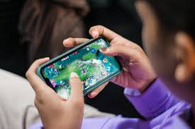
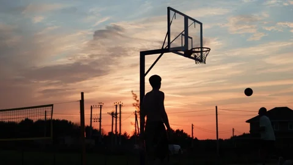

The Other Side of Me
Beyond work — the things I love.
Watching Filipino Movies
I enjoy watching Filipino movies because they showcase our culture, traditions, and real-life stories. They can be emotional, funny, or inspiring, and I like how they reflect the everyday experiences of Filipino families and communities. Watching these films is also a great way for me to relax and be entertained.

Playing Online Games
Playing online games is one of my favorite hobbies because it is both fun and exciting. It helps me improve my strategic thinking, decision-making skills, and teamwork, especially when playing with friends.

Playing Basketball
Playing basketball keeps me active and healthy. I enjoy the teamwork, competition, and fast-paced action of the game. It helps me develop discipline, coordination, and sportsmanship while having fun with friends.